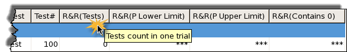
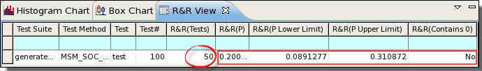
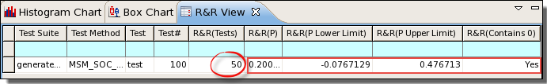
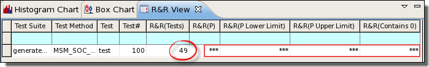
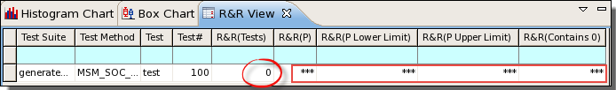

R&R (Repeatability and Reproducibility) view
The R&R (Repeatability and Reproducibility) view is included by default in the Result perspective. If you do not see this view, press the Ctrl+3 key combination and search for it on the Quick Access window. You can also open it by right-clicking a data log (.edl or .stdf) in the Data Log Explorer view and selecting the R&R context menu.
This view derives its name from the industrial Gauge R&R testing. R&R is an acronym for Repeatability and Reproducibility.
As an extension to the Result view and the Integrated Result Tool, this view provides additional R&R results for easier identification of tests that are neither reproducible nor repeatable.
Default R&R logic vs. customized algorithm
A default R&R binomial for checking marginality and stability is shipped with SmarTest. You can replace it with your own algorithm or use the default one.
- To implement your own algorithm, you are required to change source code of the R&R view.
- To use the default algorithm, you need to define test methods which match data log output with the algorithm. See User-defined test method example.
This topic will focus on the default algorithm.
How does the default algorithm calculate R&R results?
Some concepts: confidence interval, confidence level & limits
A confidence interval is a range of values that is likely to contain an unknown population parameter. In the R&R view, R&R (P Lower Limit) and R&R (P Upper Limit) form a complete confidence interval of the fail percent R&R (P).
A confidence level is a coefficient which determines how frequently the observed interval contains the parameter. Here, how often the interval [R&R (P Lower Limit), R&R (P Upper Limit)] contains the fail percent R&R (P).
Limits are the both sides of a confidence interval. R&R (P Lower Limit) is the starting side and R&R (P Upper Limit) is the ending side.
A 95% confidence interval means a confidence interval at the 95% confidence level. Confidence interval changes with different confidence levels.
For example, a 95% confidence interval indicates that 95 out of 100 samples (95%) from the same population will produce confidence intervals that contain the population parameter.
Tasks
Showing R&R results for a single data log with multiple test runs
If the data log (.edl or .stdf) you are about to show in the R&R view contains results from multiple test runs, you can open it directly.
- From the menu bar of SmarTest, select .
- In the Data Log Explorer, click the Load button
 .
. - Browse to the target .edl or .stdf file and click OK to load it.
- Right-click the loaded file and select the R&R shortcut menu.
The R&R results for the selected data log is opened in the R&R view. See example 1 of "R&R view examples". Failures to display valid R&R results are shown by example 3 and example 4 of "R&R view examples".
Showing R&R results for multiple data logs with single test run
If the data log (.edl or .stdf) you are about to show in the R&R view contains results from a single test run, you need to merge multiple data logs and then open the merged data log.
- From the menu bar of SmarTest, select .
- In the Data Log Explorer, click the Load button .
- Browse to the first target .edl or .stdf file and click OK to load it.
- Repeat step 3 to load more data logs.
- Merge data logs.
- Select one of the loaded data log as the base for merge. Right-click it and select
Merge....
The Merge window is displayed.
- In the Select data log(s) to merge: area, select files to merge with the base.
- In the Merge Options: area, select Keep both.
- Click Finish.
Refer to Merging data logs for more information.
- Select one of the loaded data log as the base for merge. Right-click it and select
Merge....
- Right-clicking the merged file and select the R&R context menu.
The R&R results for the selected data log is opened in the R&R view. See example 1 of "R&R view examples". Failures to display valid R&R results are shown by example 3 and example 4 of "R&R view examples".
Adjusting the Confidence Interval parameter
The confidenceInterval parameter is used by the R&R algorithm in calculating the z value. Changing its value causes a change to the z value.
Follow steps below to change value of the confidenceInterval parameter through SmarTest UI. Before you begin, make sure your R&R view is displayed with valid R&R results.
- Right-click anywhere in the R&R table and select Confidence Interval.... This opens the Confidence Interval window.
- In the Confidence Interval: text box, specify a value between 0 and 1, for example 0.92. The default value is 0.95.
- Click Apply to save the change and click OK to close the window.
R&R results are updated based on the new confidence level and displayed in the R&R table. See example 2 of "R&R view examples".
Showing or hiding columns in the R&R table
You can configure which columns are displayed in the R&R table. See R&R preference settings for details.
Using the R&R results
Check result in the R&R (Contains 0) column. If Yes is displayed (confidence interval includes 0), you can consider stability and marginality a non-issue. If No is displayed (confidence interval excludes 0), you need to reconsider the magnitude of the proportion.
Reference
Table
|
Column Title |
Description |
|---|---|---|
Common result fields |
Test Suite |
These columns contain standard test results information. They are the same as the columns in the Test summary tab. |
Test Method |
||
Test |
||
Test# |
||
R&R specific result fields |
R&R(Tests) |
The total count of tested devices. |
R&R(P) |
Fail percent. A proportion of devices with mismatching test results (flips) out of all devices tested. |
|
R&R(P Lower Limit) |
The lower limit of the confidence interval of the fail percent at a given confidence level. |
|
R&R(P Upper Limit) |
The upper limit of the confidence interval of the fail percent at a given confidence level. |
|
R&R(Contains 0) |
A flag which indicates whether the value 0 falls in the confidence interval, that is, a value range from the P Lower Limit to P Upper Limit. |
Tooltip
Hover the mouse over a column header to see description of this column. The following example shows you the tooltip of the R&R(Tests) column.

Shortcut menu
Menu Item |
Description |
|---|---|
Confidence Interval... |
Right-clicking anywhere in the R&R table displays this shortcut menu. When you select this menu, the Confidence Interval window is displayed, which allows you to specify a value for the confidenceInterval parameter, a percentage representing the confidence level and expressed in decimal. Value should be a decimal between 0 and 1. The default value is 0.95, which indicates a 95% confidence level. See "How does the default algorithm calculate R&R results?". |
Examples
R&R view examples
Example 1: n=50, p=0.2, using default confidence level (0.95)

This example uses the default confidence level 0.95.
When n is 50 and p is 0.2, the 0.95 confidence interval ranges from 0.0891277 (lower limit) to 0.310872 (upper limit). The value 0 falls out of the confidence interval. As a result, the R&R(Contains 0) flag displays No.
Example 2: n=50, p=0.2, change confidence level to 0.90

This example follows the previous example with confidence level changed to 0.90.
When n is 50 and p is 0.2, the 0.90 confidence interval ranges from -0.0767129 (lower limit) to 0.476713 (upper limit). The value 0 cut through the confidence interval. As a result, the R&R(Contains 0) flag displays Yes.
Example 3: n=49, no value displayed

In this example, *** is displayed instead of a valid value for R&R results, because n is 49 (less than 50).
Example 4: single run of test in data log, no value displayed

In this example, *** is displayed instead of a valid value for R&R results, because the data log loaded for display only contains results of one test run.
User-defined test method example
Below is a sample customized implementation:
#include "testmethod.hpp"
//for test method API interfaces
#include "mapi.hpp"
#include <sstream>
using namespace std;
/**
* Test method class.
*
* For each testsuite using this test method, one object of this
* class is created.
*/
class CustomRR: public testmethod::TestMethod {
protected:
/**
*Initialize the parameter interface to the testflow.
*This method is called just once after a test suite is created.
*/
virtual void initialize()
{
//Add your initialization code here
/**
*This test is invoked per site.
*/
virtual void run()
{
std::string expression = createExpression(device_index);
PUT_DATALOG(expression.c_str());
}
std::string createExpression(int index) {
std::ostringstream stringStream1;
stringStream1 << "001B001E";
stringStream1.fill('0');
stringStream1.width(4);
stringStream1 << index;
std::string fuseID = stringStream1.str();
std::ostringstream stringStream;
stringStream << "CERTICOM_SERIAL=";
stringStream << fuseID;
stringStream << ",SITE=2";
std::string expression = stringStream.str();
return expression;
}
/**
*This function will be invoked once the specified parameter's value is changed.
*@param parameterIdentifier
*/
virtual void postParameterChange(const string& parameterIdentifier)
{
//Add your code
//Note: Test Method API should not be used in this method!
return;
}
/**
*This function will be invoked once the Select Test Method Dialog is opened.
*/
virtual const string getComment() const
{
string comment = " please add your comment for this method.";
return comment;
}
};
REGISTER_TESTMETHOD("CustomRR", CustomRR);Functional changes
- Introduced in SmarTest 7.4.1